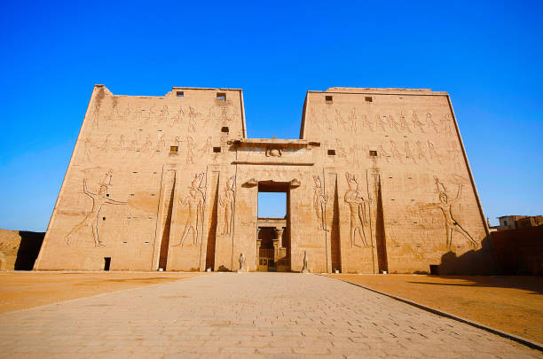
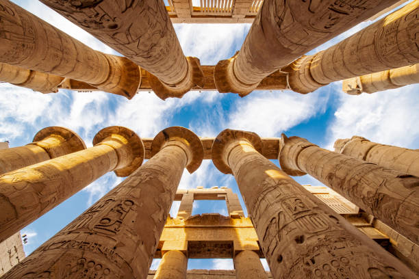
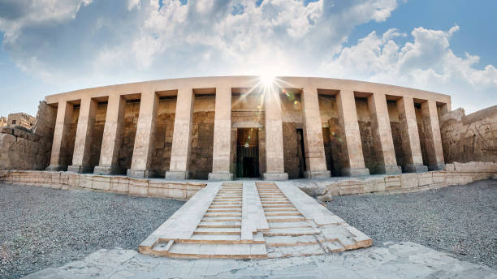
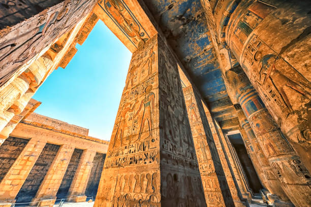
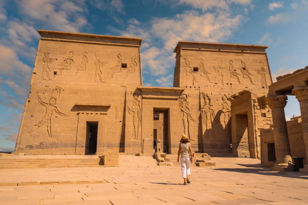

temples
temples

temple of abu simbel

Temple of Luxor

temple of kom ombo

temple of edfu

Temple of Hatshepsut

temple of karnak

temple of seti

temple of Medinet Habu

Temple of Philae Island
temple of abu simbel
Abu Simbel is an archaeological site located on the western bank of Lake Nasser, about 290 km southwest of Aswan. It is one of the sites of the "Nubian Monuments" included in the UNESCO List of World Heritage Sites. Which starts from the direction of the river flow from Abu Simbel to Philae (near Aswan).
The construction of the Great Temple at Abu Simbel took nearly twenty years, and was completed in about 24 years of the reign of Ramses the Great (which corresponds to 1265 BC). It was dedicated to the gods Amun, Ra-Harakhty, Ptah, as well as to Ramses. It is generally considered the finest and most beautiful temples that were commissioned during the reign of Ramses II, and one of the most beautiful in Egypt.
Temple Of Luxor
Luxor Temple A large complex of ancient Egyptian temples located on the east bank of the Nile in the city of Luxor today known as (Old Thebes). Founded in 1400 BC. Luxor Temple was built to worship Amun-Re and his wife Mut and their son Khonsu. They are the gods that are also called the Theban Trinity (The Thebes Trinity).
Luxor Temple was built during the reign of the kings of the Eighteenth Dynasty and the Nineteenth Dynasty. The most important existing buildings in the temple are those built by the two kings Amenhotep III (1397-1360 BC) and Ramses II (1290-1223 BC) (who added to the temple the open courtyard, the edifice, and the two obelisks). King Tuthmosis III (1490-1436 BC) also set up booths for visitors to the Holy Trinity of Thebes, and Tutankhamun (1348-1337 BC) completed the inscriptions on its walls.
Temple Of Kom Ombo
The Kom Ombo Temple is located in the city of Kom Ombo, Aswan Governorate, southern Egypt. The temple was established during the reign of Ptolemy VI to worship the gods Sobek and Horus. Recently, restoration and renovation of the temple area has taken place.
This temple was built during the reign of Ptolemy VI Philometor, but its decoration was not completed until the Roman era, during the time of Emperor Tiberius. We also see in this temple the same characteristics that we find in other Ptolemaic Egyptian temples in terms of design architecture and decoration. Local worship in the place, where people worshiped two local deities. Sobek and falcon-headed Horus.
Temple Of Edfu
The Temple of Edfu or the Temple of Horus, is the second temple of ancient Egypt in size, after the Temple of Karnak. It is located in the city of Edfu in Upper Egypt on the west bank of the Nile, which was known during the Hellenistic period in Greek vernacular as (Ἀπόλλωνος πόλις) and in Latin (Apollonopolis Magna), representing the temple One of the last attempts of the Ptolemies to build temples in the style of their ancestors was grandeur. It took about 180 years to build the Temple of Horus.
The Temple of Edfu was one of many temples built during the Ptolemaic Kingdom, including the temple complex of Dendera, Esna, Kom Ombo, and Philae. whose size reflects the relative prosperity of that time.
Temple Of Hatshepsut
The Temple of Hatshepsut or the Mortuary Temple of Hatshepsut is a temple from the Egyptian Eighteenth Dynasty, and the best remains of the temples were built about 3500 years ago in Deir el-Bahari in Egypt. It was built by Queen Hatshepsut on the west bank of the Nile opposite Thebes (the capital of ancient Egypt and the seat of worship of Amun) (today's Luxor).
The Temple of Hatshepsut is distinguished by its unique architectural design, compared to the Egyptian temples that were built on the eastern bank of the Nile in Thebes. The temple consists of three successive floors on open terraces. The temple was built of limestone, and in front of the columns of the second floor were erected limestone statues of the god Osiris and Queen Hatshepsut in a beautiful arrangement. Originally, these statues were colored, and only some traces remain of the colors now, and some statues are in absolutely good condition.
Temple Of Karnak
Karnak or the Karnak temple complex, which is better known as the Karnak Temple, is a group of temples, buildings and columns, where expansion and construction continued since the Pharaonic era, specifically the kings of the Middle Kingdom until the Roman era in Luxor in Egypt on the eastern coast. The temple was built for the divine trinity Amun (Amun-Re in modern times), his wife the goddess Mut and their son the god Khonsu; Each of them has a temple belonging to the Karnak temple complex. Sometimes tourists and non-specialists mean only Karnak Temple, the temple belonging to Amun i Amun Ra.
Temple Of Seti
The mortuary temple of Seti I is also known as the great temple of Abydos or the minumium, and it is part of (Men Maat-Ra), meaning an immortal who is the justice of the god Ra, which is the name that Seti I received at his coronation. This temple is a hollow tomb, built by Pharaoh Seti I in Abydos in Upper Egypt, and completed by his son Ramses II, who also belongs to the Nineteenth Dynasty. It was supplemented by the adjacent Temple of Osiris, a temple which functions as a voluntary relic vowed to bring in the patronage of Osiris; God of resurrection and reckoning in the afterlife. The history of the settlements of Abydos dates back to the first Naqada era - a period from 4500: 3500 BC. Abydos is a religious center and a place of pilgrimage; It is believed that the head of Osiris was buried there.
Temple Of Medinet Habu
Mortuary Temple, Medinet Habu Temple, or Ramses III Temple; It is one of the greatest temples of the twentieth dynasty, built by King Ramses 3 to hold funeral rites for him and for the worship of the god Amun. Temples are furniture and inscriptions, and the statue of Amun was decorated with precious stones. On the walls of the temple we find valuable inscriptions
a scene depicting the naval victory over the tribes of the Sea Peoples (Shirdana), and other scenes representing the naval campaign against the Libyans, as we see some deities carrying offerings from the royal estates preparing for them. For the god Amun in the temple.
Temple Of Philae Island
Philae Island, is an island in the Nile. It is the strongest fortifications along the southern borders of Egypt. It separates the Nile into two opposite channels in Aswan. It had a Philae temple. It moved from its original place on the island of Philae and was assembled on the island of Agilika, at the airport for the construction of the High Dam.
As for the Arabic name for it.
Anas al-Wujud, in relation to the legend of Anas, found in the stories of the Thousand and One Nights. As for the ancient Egyptian and Coptic name, it is Bilak or Bilakh, meaning the limit or the end, the end of which ends in Egypt in the south. For example, the cult dedicated the extermination of the goddess Isis, but the island contained temples to Hathor, Amenhotep and other temples.